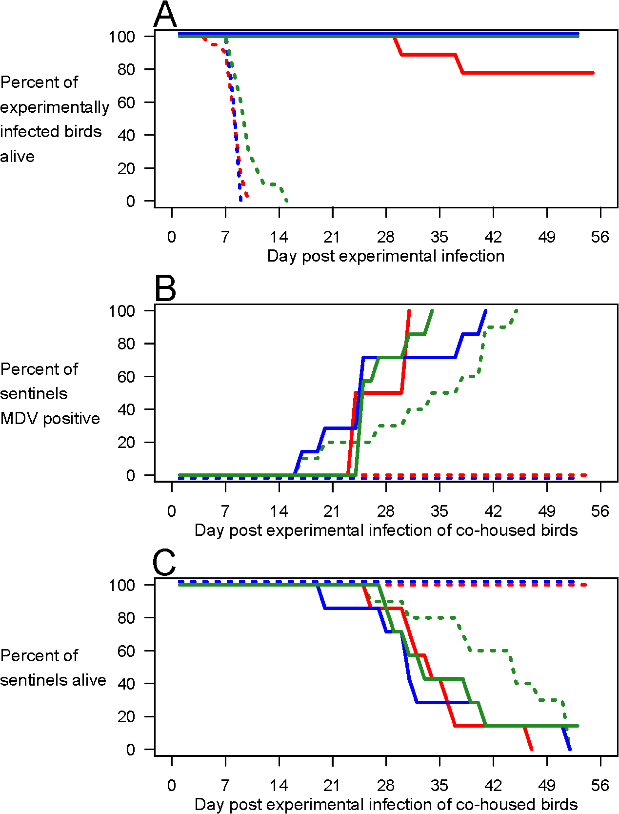
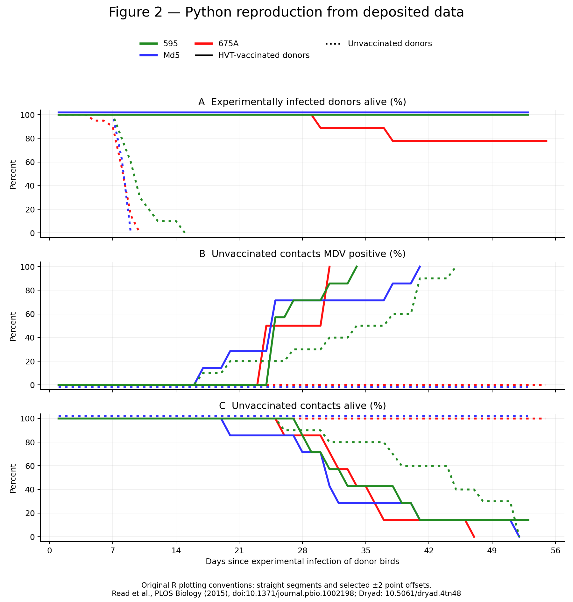

EVIDENCE STATUSOriginal Dryad archive recovered in Firefox. Figures now use deposited bird-state data.See the record ↗
01 / THE PROCESS
A scientific result. An inspectable trail.
Can we reproduce a major figure from a paper about Marek’s disease vaccination? Follow the sources, the access obstacle, and the browser recovery that enabled reproduction from data.
↗
THE STARTING POINT · PLOS BIOLOGY
Imperfect Vaccination Can Enhance the Transmission of Highly Virulent Pathogens
Andrew F. Read and colleagues · 27 July 2015
PRIMARY SOURCE
How the investigation unfolded
Select a step to inspect it
THE OUTCOME
A data-derived reproduction, with its limits attached.
The evidence trail explains both what was produced and what remains unverified.
Three views of the same experiment: donor survival, infection of contact birds, and contact survival. Change the strain, then move through time.
FIGURE 2 / DEPOSITED DATA + ORIGINAL R CODE
DATA VERIFIED
The default step view shows supplied daily states without display offsets. Publication view restores the original R line segments and selected ±2-point shifts. Neither view establishes exact infection times.
AT THE SELECTED DAY
Daily record fractions
A dash means the selected day is outside a trace’s drawn extent. No extrapolation. Table values always exclude display offsets.
Strain
Vaccinated donors
Unvaccinated donors
Inspect the deposited bird-state records +
Row
Deposited ID
First state change
Final state
Row numbers are local to each table block. Placeholder IDs such as x cannot link individuals across files. Positivity transition is recorded detection, not exact acquisition.
Compare with the publisher’s original Figure 2 +

Published Figure 2 · Read et al. (2015), CC BY

Python reproduction · actual deposited data + R conventions
BEFORE DRAWING A CONCLUSION
A transmission mechanism is not an evolutionary history.
The distinction that matters: enabling transmission of existing lethal strains is different from observing new virulence evolve.
MECHANISM SUPPORTED IN THESE CONDITIONS
01
Protection from early death
Vaccinated donors survive longer.
→
02
Time to shed virus
The infectious period can continue.
→
03
Onward infection
Unvaccinated contacts become infected.
Interpretation of Read et al.’s experiment; this diagram is not a separately estimated mediation model. Source ↗
SUPPORTED
Vaccination changed the opportunity for transmission.
For Md5 and 675A, transmission was observed from vaccinated donor groups and was not detected from unvaccinated donor groups in this experiment.
This supports a mechanism that can relax the transmission cost of high lethality. It also shows protection of vaccinated donors against early mortality.
NOT ESTABLISHED
Vaccination created these virulent strains.
The experiment used pre-existing strains. It did not observe new virulence mutations arise, establish the historical cause of MDV virulence, or measure long-term population persistence.
It also cannot establish the same effect for human vaccines or determine the net population benefit or harm of a vaccination policy.
PAUSE & DISCUSS
Does this paper show that vaccines make viruses more dangerous?
Think about the host, vaccine, strain, and outcome before answering.
That statement is too broad. In this chicken–MDV system, anti-disease protection enabled existing highly lethal strains to transmit under the tested conditions. That is evidence for a possible selection mechanism, not a universal rule, a demonstration of new mutations, or a finding about human vaccination.
Inspect the original R code, Python translation, deposited records, and browser download recovery. Everything displayed here comes from the saved investigation.